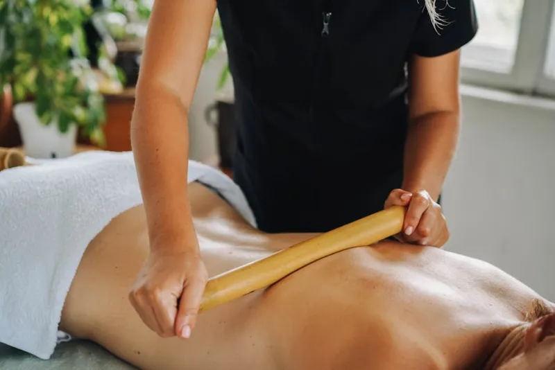
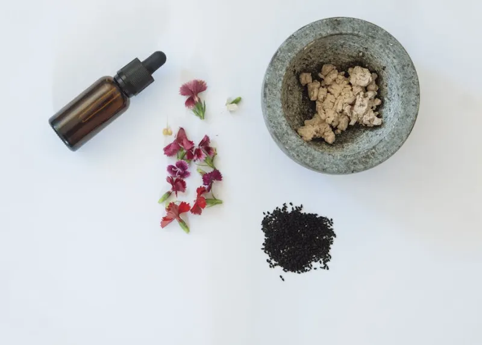

Five thousand years of Vedic wisdom, carried forward through generations of devoted practitioners who chose depth over convenience, tradition over trend.

In the village of Thrissur, Kerala, where her great-great-grandmother once prepared herbal formulations by lamplight, Dr. Priya Nair learned that medicine is not a profession but a calling — a sacred covenant between the healer and the healed.
Trained in the gurukul tradition at Kottakkal Arya Vaidya Sala, Dr. Nair spent eight years under the direct mentorship of Vaidyaratnam P.S. Varier's lineage, studying classical texts, pulse diagnosis, and the preparation of over 300 Ayurvedic formulations by hand.
After postgraduate studies at the Gujarat Ayurved University, she spent two years at healing centers in Mysore and Pondicherry before founding Vaidya in 2008 — with four treatment beds, a small herb garden, and an uncompromising commitment to classical practice.
We follow the Charaka Samhita and Ashtanga Hridayam without compromise, adapting application but never diluting the depth of classical knowledge.
Herbs are wildcrafted or cultivated without pesticides. Oils are pressed and prepared fresh. We use no synthetic fragrances, colors, or preservatives in any formulation.
We do not treat symptoms — we address root causes. Every prescription considers body, mind, spirit, season, and the unique life circumstances of each guest.
Our vaidyas study annually at Kerala's most respected Ayurvedic institutions. Knowledge must be constantly deepened or it becomes mere habit.
Each vaidya at our center has completed a minimum of five years post-graduate clinical training, specializing in one or more classical therapeutic streams.
Twenty years of Panchakarma specialization, trained at Kottakkal under the direct lineage of Vaidyaratnam. Dr. Kumar's hands are said to read the body with the sensitivity of ancient texts.
Specializing in women's health and Rasayana (rejuvenation), Dr. Acharya brings rare expertise in classical Stri Roga treatments and postpartum Ayurvedic care alongside deep anti-aging protocols.
A specialist in internal medicine (Kaya Chikitsa) and digestive disorders, Dr. Varma's dietary prescriptions and herbal formulations have helped thousands resolve chronic conditions overlooked by modern medicine.
Regarded as one of India's most gifted pulse diagnosticians under forty, Dr. Pillai trained for seven years mastering Nadi Pariksha. Guests often describe her readings as uncannily accurate.
Drawing from Kerala's Kalari tradition as well as classical Ayurvedic orthopedics, Dr. Menon specializes in joint disorders, stress patterns, and the restoration of structural harmony through Pizhichil and Greeva Basti.
A rare specialization in Ayurvedic psychology (Manas Chikitsa), Dr. Nambiar works with stress, sleep disorders, emotional imbalances, and what Ayurveda calls diseases of the mind that manifest in the body.
Kerala holds a unique place in the world of Ayurveda. Its hot, humid climate supports the growth of rare medicinal plants. Its rivers and backwaters shaped a culture of herbal medicine dating back over a thousand years. Its royal courts patronized generations of Ashtavaidya families — eight dynasties of classical physicians whose knowledge was passed from father to son through oral transmission.
Vaidya's practice draws from this Kerala tradition while honoring the pan-Indian classical texts — the Charaka Samhita, Sushruta Samhita, and Ashtanga Hridayam — as primary references. Our vaidyas study both ancient scripture and contemporary Ayurvedic research to ensure that tradition serves the present moment.
Our herb garden in Alleppey grows over 60 medicinal plants. Our Bangalore apothecary prepares classical Arishtas (fermented herbal wines), Asavas, Lehyams (herbal jams), and Ghritis (medicated ghees) according to recipes unchanged for centuries — freshness and purity being our only modifications.
